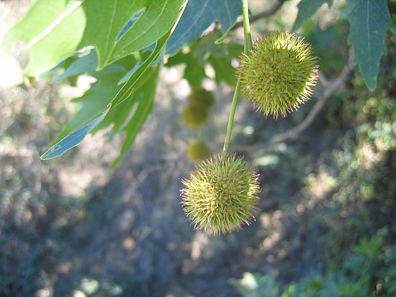
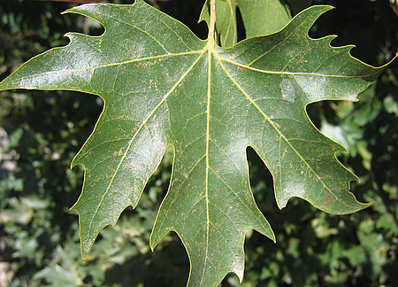
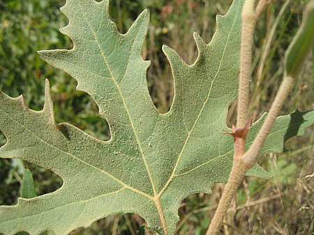
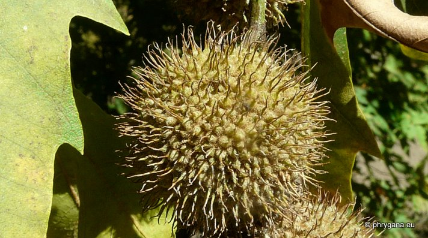
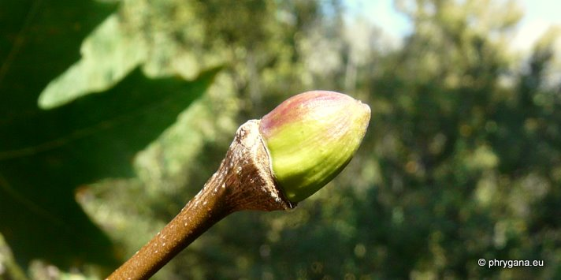
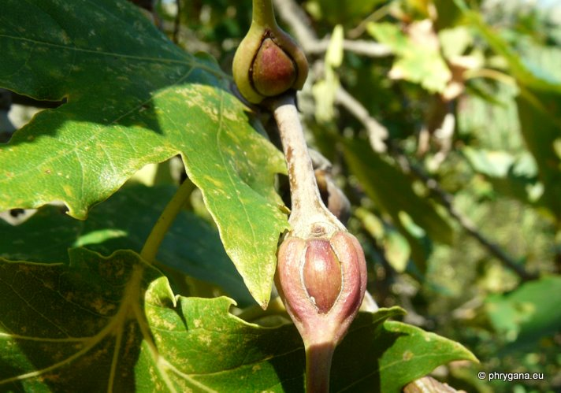
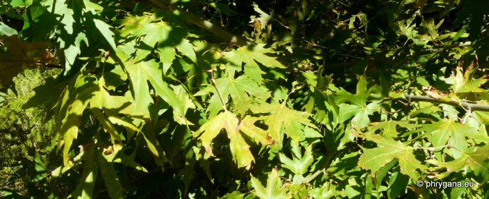

| PHRYGANA | Fauna | Flora |
additions nouveautés |
espèces species |
contact -
info - commentaires phrygana1 (at) gmail.com |
| diversité crétoise -- Cretan diversity | Galles et mines | ||||
| Platanus orientalis L. |
| 67 | Flora | PLATANACEAE | Platanus L. |
 Platanus orientalis Gerakari 09 juillet 2007 |
| en: Oriental Planetree fr: le Platane d'Orient de: Morgenländische Platane | |
| Feuilles: longuement pétiolées (13 à 55 mm), alternes, assez grandes (70 - 180 mm x 70 - 210 mm), palmatilobées à 5 - 7 lobes, le médian étant plus long que large à la base. A l'état jeune, les feuilles sont tomenteuses, à poils étoilés, le côté supérieur devenant vert foncé. | |
| Ecorce brun foncé, se desquamant en fines plaques qui laissent de larges taches claires. A la base du tronc, écorce épaisse, souvent crevassée, de couleur gris foncé. Jeunes rameaux brun rougeâtre à brun noir, tomenteux. | |
| Fleurs: inflorescence femelle longue de 100 à 160 mm, avec des capitules séparés (2-3 - 6) larges de 10 - 12 mm, sur un long pédoncule. | |
| Hauteur: 10 - 30 m | Type biologique: phanérophyte caducifolié |
| Floraison: avril mai | |
| Altitudes: 0 - 1200 m | |
| Statut en Crète: indigène et cultivé - native, cultivated | |
| Biotopes en Crète: berges de rivières, sources, parcs, places de villages. | |
| Origine: Europe méridionale orientale (Italie, péninsule des Balkans) | |
| Fréquemment planté pour créer de l'ombre dans les villages. | |
|  Platanus Platanus orientalis Agios Ioannis 07 juillet 2007 Platanus orientalis Gerakari 09 juillet 2007 |
|
 Platanus orientalis Agios Ioannis 19 octobre 2011 |
|
 Platanus orientalis Agios Ioannis 19 octobre 2011 |
|
 Platanus orientalis Agios Ioannis 19 octobre 2011 |
|
 Platanus orientalis Agios Ioannis 19 octobre 2011 |
| 24 octobre 2011 |
| © paul fontaine -- © Phrygana.eu 2007 -- 2013 |